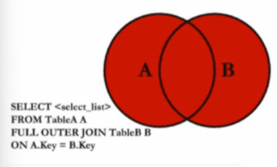

多表查询 #
资料准备
-- table1 :
create table user1(id number(3), user_name varchar(10), over varchar(10));
insert into user1 values(1, 'tangseng', 'dtgdf');
insert into user1 values(2, 'sunwukong', 'dzsf');
insert into user1 values(1, 'zhubajie', 'jtsz');
insert into user1 values(1, 'shaseng', 'jslh');
-- table2 :
create table user2(id number(3), user_name varchar(10), over varchar(10));
insert into user2 values(1, 'sunwukong', 'chengfo');
insert into user2 values(2, 'niumowang', 'chengyao');
insert into user2 values(3, 'jiaomowang', 'chengyao');
insert into user2 values(4, 'pengmowang', 'chengyao');
INNER 内连接
#

select a.id, a.user_name, b.over
from user1 a
inner join user2 b
on a.user_name=b.user_name;
ID USER_NAME OVER
---- ---------- ----------
2 sunwukong chengfo
LEFT/RIGHT #
LEFT #
left join是left outer join的缩写，outer 可以不写
select a.id, a.user_name, b.over
from user1 a
left outer join user2 b
on a.user_name=b.user_name;
ID USER_NAME OVER
---- ---------- ----------
2 sunwukong chengfo
1 shaseng
1 zhubajie
1 tangseng
RIGHT
#
left join和right join区别就是量表的顺序不同，所以a left join b和b right join a是完全等效的，所以right join不必学习，使用时仅使用left join即可
select b.user_name, b.over, a.over
from user1 a
right join user2 b
on a.user_name=b.user_name;
USER_NAME OVER OVER
---------- ---------- ----------
sunwukong chengfo dzsf
niumowang chengyao
jiaomowang chengyao
pengmowang chengyao
FULL
#

select a.id, a.user_name, b.over
from user1 a
full join user2 b
on a.user_name=b.user_name
ID USER_NAME OVER
---- ---------- ----------
2 sunwukong chengfo
chengyao
chengyao
chengyao
1 shaseng
1 zhubajie
1 tangseng
笛卡尔连接(交叉连接) #

a,b是a cross b的缩写，通常情况下，我们会进一步使用 where 条件筛选资料
select a.id,a.user_name,b.id,b.user_name
from user1 a,user2 b;
ID USER_NAME ID USER_NAME
---- ---------- ---- ----------
1 tangseng 1 sunwukong
1 tangseng 2 niumowang
1 tangseng 3 jiaomowang
1 tangseng 4 pengmowang
2 sunwukong 1 sunwukong
2 sunwukong 2 niumowang
2 sunwukong 3 jiaomowang
2 sunwukong 4 pengmowang
1 zhubajie 1 sunwukong
1 zhubajie 2 niumowang
1 zhubajie 3 jiaomowang
1 zhubajie 4 pengmowang
1 shaseng 1 sunwukong
1 shaseng 2 niumowang
1 shaseng 3 jiaomowang
1 shaseng 4 pengmowang
select a.id, a.user_name, b.over
from user1 a,user2 b
where a.user_name=b.user_name;
以上笛卡尔连接，配合
where条件等效以下内连接，所以内连接也不需要学。
select a.id, a.user_name, b.over
from user1 a
inner join user2 b
on a.user_name=b.user_name;
ID USER_NAME OVER
---- ---------- ----------
2 sunwukong chengfo
总结 #
综上所述，我们只要笛卡尔连接，和LEFT左连接就可以解锁99%的场景，剩下1%场景，我们可以使用代码协助。
-
笛卡尔连接，两个表都存在数据，才会显示出来
-
LEFT 连接，只要左表存在数据，右表数据为NULL也会显示出来